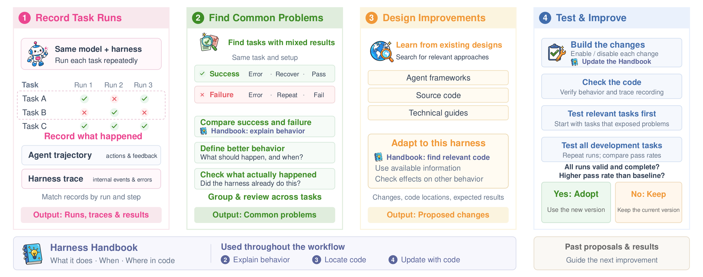
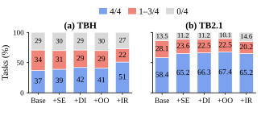
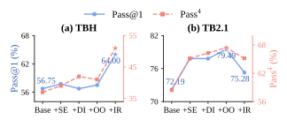
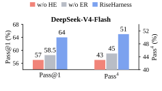
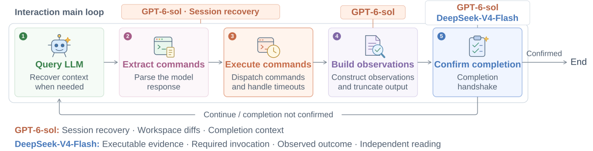
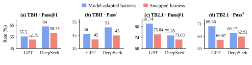
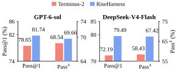

TL;DRFixed model weights, more reliable execution固定模型权重，提升执行可靠性
A Terminal Agent can both succeed and fail when repeating the same task under the same configuration. RiseHarness uses these differences to identify opportunities to improve the harness and evaluates candidate changes. In the experiments, the evolved harnesses improve both average success and the share of tasks that succeed across repeated runs.Terminal Agent 即使在相同配置下重复执行同一任务，也可能出现成功与失败并存的结果。RiseHarness 利用这种差异定位 harness 的改进空间，并通过评测验证候选修改。实验中，演进后的 harness 同时提升了平均成功率，以及多次运行均成功的任务占比。
DeepSeek-V4-Flash · TBH: 37% → 51%Pass4：四次均成功的任务占比
DeepSeek-V4-Flash · TBH：37% → 51%
DeepSeek-V4-Flash · TBH: 34% → 22%Flip：成功与失败并存的任务占比
DeepSeek-V4-Flash · TBH：34% → 22%
GPT-6-sol · TBH: 39% → 46%Pass4：四次均成功的任务占比
GPT-6-sol · TBH：39% → 46%
GPT-6-sol · TB2.1: direct transfer, harness fixedPass@1：平均成功率的提升
GPT-6-sol · TB2.1：直接迁移，harness 保持固定
RiseHarness starts with tasks that both succeed and fail under the same configuration. It compares successful and failed runs using agent traces and internal harness traces, then uses a Harness Handbook to connect the observed behavior to code. Relevant designs from other harnesses inform candidate changes. Repeated evaluation determines which changes to retain for the next iteration.RiseHarness 从相同配置下成功与失败并存的任务入手，对照 agent trace 与内部 harness trace，分析两类执行的差异。随后借助 Harness Handbook 将观察到的行为映射到代码，并参考其他 harness 的相关设计提出候选修改。重复评测决定哪些修改保留，并进入下一轮迭代。
01Why improve the harness?为什么从 harness 入手？
Long-horizon terminal agent tasks can require hundreds of interactions. An incorrect command or overlooked result can alter the environment or the context for later decisions. Variation in model outputs can therefore lead the same task toward different outcomes, even when the configuration is fixed.long horizon terminal agent task 可能需要数百次交互。一条错误命令或一项被忽略的反馈，都可能改变环境或后续决策所依赖的上下文。模型输出的差异因此可能沿执行过程传递，使同一任务在固定配置下仍得到不同结果。
The harness helps control this process: how commands execute, which results reach the model, how context is maintained, and when the agent can stop. These mechanisms affect whether errors are detected and corrected in time. Improving them can help a fixed model use its existing capabilities more reliably.Harness 会影响这一过程：命令如何执行、哪些结果返回给模型、上下文如何维护，以及 agent 何时可以结束任务，都由它参与控制。这些机制关系到错误能否被及时发现与纠正，因此优化 harness 可以帮助固定模型更稳定地发挥已有能力。
Three challenges in improving a harness改进 harness 的三个难点
- Reduce the risk of overfitting harness changes. A fix based on one failed run can become tied to details of that task or trajectory. RiseHarness compares successful and failed runs of the same task, then looks for shared problems across tasks to guide more broadly applicable changes.降低 harness 改进中的 overfitting 风险。仅针对一次失败修补 harness，容易依赖特定任务或 trajectory 的细节。RiseHarness 对照同一任务的成功与失败运行，再归纳不同任务中的共性问题，使修改围绕可复用的机制展开。
- Agent trajectories can miss problems inside the harness. An agent trajectory shows the model’s requests and the feedback it receives, but not the full processing that connects them. Harness traces reveal internal behavior such as tool execution, feedback generation, and output truncation, helping uncover and locate problems that are difficult to identify from the model’s interactions alone.仅看 agent trajectory，可能遗漏 harness 内部的问题。Agent trajectory 展示模型发出的请求与收到的反馈，却无法完整呈现两者之间的处理过程。结合 harness trace，可以进一步追踪工具执行、反馈生成与截断等内部行为，发现并定位仅看模型交互记录难以识别的问题。
- Find design ideas that fit the current harness. Self-reflection alone may not turn failure analysis into concrete, implementable changes. RiseHarness therefore uses web search to study implementations and technical documentation from other agent frameworks. These designs provide useful references, but may depend on different architectures, interfaces, or runtime information. The system must assess which ideas fit the current harness and target model, adapt them, and validate the changes through behavioral checks and repeated evaluation.寻找可借鉴、可适配的修改方案。仅依赖模型的 self-reflection，未必能将失败分析转化为具体、可实施的修改建议。因此，RiseHarness 通过 web search 调研其他 agent 框架的实现与技术文档，为改进提供设计参考。但这些机制可能依赖不同的架构、接口或运行时信息，不能直接照搬；需要结合当前 harness 与目标模型进行筛选和适配，再通过行为检查与重复评测验证效果。
RiseHarness connects these steps in an iterative workflow: compare successful and failed runs, check proposed behavioral needs against internal execution, study relevant external designs, and evaluate candidate changes before retaining them.RiseHarness 将这些环节组织为迭代流程：对照成功与失败运行，用内部执行证据核实候选行为需求，再参考外部设计形成修改方案，并通过评测决定是否保留。
02How RiseHarness worksRiseHarness 如何工作
Each iteration has four stages: collect execution traces, identify shared problems, design candidate changes, and implement and evaluate them. Changes that improve measured success become the starting point for the next iteration.每轮迭代分为四个阶段：采集执行 trace、识别共性问题、设计候选修改，以及实现与评测。评测后保留成功率提升的版本，作为下一轮迭代的起点。
The Harness Handbook supports this process by explaining how the current harness works and linking its mechanisms to their code locations. This helps the system interpret traces and locate the code to modify. The Handbook is updated alongside the code so that later iterations work from documentation that matches the current implementation.Harness Handbook 为这一流程提供当前 harness 的实现说明，将各项机制与代码位置对应起来，帮助系统理解 trace 并定位需要修改的代码。Handbook 随代码同步更新，使下一轮分析所依据的说明与当前实现保持一致。

Collect execution traces采集执行 trace
Keep the model and current harness fixed while repeatedly running tasks from the iteration task set, collecting both agent traces and harness traces. Use the Harness Handbook to connect these records to system behavior and support comparisons between successful and failed runs.固定模型与当前 harness，在迭代任务集上重复运行，同时采集 agent trace 与 harness trace。结合 Harness Handbook，将执行记录与系统行为关联，为分析成功与失败的差异提供依据。
Find shared problems识别共性问题
Compare successful and failed runs of the same task to propose behavioral requirements, then check them against internal execution evidence. Group similar findings across tasks to identify shared needs that one harness change could address.对照同一任务的成功与失败运行，提出候选行为需求，并用内部执行证据核实。再汇总跨任务的相似问题，识别可由同一项 harness 修改解决的共性需求。
Design candidate changes设计候选修改
Use web search to explore how other agent frameworks address the shared needs. Select and adapt relevant designs to the current harness and target model, turning them into concrete modification proposals.围绕共性需求，通过 web search 调研其他 agent 框架的设计与实现。结合当前 harness 和目标模型筛选、适配这些思路，形成具体的修改方案。
Implement and evaluate实现与评测
Implement candidate changes, check their behavior, and evaluate them through repeated runs on the same iteration task set. Retain versions that improve measured success, carrying the updated harness, Handbook, and execution records into the next iteration. Once the iterations are complete, hold the harness fixed and test it on a benchmark not used during iteration to assess cross-benchmark robustness.实现候选修改，检查其行为，并在同一迭代任务集上重复评测。保留实测成功率提升的版本，将更新后的 harness、Handbook 与执行记录用于下一轮迭代。迭代完成后，固定 harness 版本，在未参与迭代的 benchmark 上测试，检验跨 benchmark 的鲁棒性。
Use flipping tasks to investigate reliability从 flipping tasks 分析可靠性问题
We call a task a flipping task when it has both successful and failed runs under the same configuration. A successful run shows that the current system can complete the task and gives us a concrete reference for examining failures.在相同配置下，同时存在成功与失败运行的任务称为 flipping task。成功运行表明当前系统具备完成该任务的能力，并为分析失败提供可对照的执行样本。
Formally, let be 1 if task succeeds on run with harness , and 0 otherwise. With runs per task, the set is:形式上，若任务 使用 harness 在第 次运行中成功，记 ，否则为 0。每个任务运行 次，则这类任务的集合为：
In other words, these tasks pass at least once, but not every time. Tasks that fail on every recorded attempt are excluded from this discovery step because they offer no successful run to compare against.这类任务至少有一次成功运行，但并非所有运行都成功。所有已记录运行均失败的任务不进入这一问题发现阶段，因为缺少可供对照的成功样本。
Agent and harness traces: aligning interactions with internal executionAgent trace 与 harness trace：对齐交互与内部执行
The agent trace records the model’s inputs, replies, and tool requests. The harness trace, collected by a separate runtime monitor, records selected function calls: their arguments, return values, exceptions, and source locations. Aligning the two reveals how a request was handled inside the harness and what feedback reached the model.Agent trace 记录模型收到的输入、生成的回复与发出的工具请求；harness trace 由独立的 runtime monitor 采集，记录选定函数的调用参数、返回值、异常与源码位置。对齐两类 trace 后，可以追踪请求在 harness 内部如何处理，以及哪些反馈最终到达模型。
The analysis model uses the Handbook to interpret these calls in terms of behavior, such as command execution, feedback generation, context management, and completion checks. This connects a low-level execution record to a mechanism that can be changed.分析模型借助 Handbook，将函数调用对应到命令执行、反馈生成、上下文管理和完成检查等行为职责，从而把底层执行记录与可修改的机制联系起来。
Turn observed failures into shared requirements从失败现象归纳共性需求
| CompareCompare | Compare the successful and failed runs, then use the Handbook to understand the harness’s role in the differences.对比成功与失败运行，结合 Handbook 分析 harness 在执行差异中的作用。 |
| WishWish | Describe what the harness should do and which observable condition should trigger that behavior.定义期望的 harness 行为，以及可观测的触发条件。 |
| ReviseRevise | Check the harness trace: was the needed information available, and had the harness already acted? Refine the proposed behavior accordingly.依据 harness trace 核实所需信息是否可用、相关行为是否已执行，并据此修正候选需求。 |
| GroupGroup | Group findings from different runs and tasks when one shared harness change could address them.将不同运行和任务中可由同一项 harness 修改解决的问题归为一组。 |
An independent review checks that each group describes a shared need and is distinct from the others. The system then prioritizes groups that cover more tasks and failed runs, using the number of findings as a further ranking criterion.独立审查会验证组内问题是否具有共同需求，以及各组之间的区分是否明确。系统优先处理覆盖更多任务和失败运行的问题组，并以发现的问题数量作为补充排序依据。
Find design references through web search通过 web search 获取设计参考
Guided by the shared requirements identified in trace analysis, RiseHarness uses web search to find relevant implementations and technical documentation from other agent frameworks. These sources provide concrete design references for improving the current harness.围绕 trace 分析中识别的共性需求，RiseHarness 通过 web search 检索其他 agent 框架的相关实现与技术文档，为当前 harness 的改进提供具体的设计参考。
The system assesses these designs against the current architecture, available runtime information, and target model’s behavior, then adapts suitable mechanisms into candidate proposals. Each proposal specifies the intended behavior, code locations, dependencies, and validation plan. Successful runs are also reviewed to check whether the changes could disrupt execution paths that already work.系统结合当前架构、可用运行时信息与目标模型的行为，评估已有设计的适用条件，并将相关机制适配为候选方案。方案需明确预期行为、修改位置、依赖条件和验证方式，同时参考已有成功运行，检查修改是否可能干扰原本有效的执行路径。
Validate and select candidate versions验证并筛选候选版本
Validate the candidate’s behavior and screen it on relevant tasks, then assess its overall impact through repeated runs on the full iteration task set. Retain only versions that improve measured success, carrying the updated harness, Handbook, and execution records into the next iteration.候选修改先经过行为验证与相关任务筛选，再在完整迭代任务集上重复评测，检验整体效果。仅保留实测成功率提升的版本，并将更新后的 harness、Handbook 与执行记录用于下一轮迭代。
Measure average success and execution consistency separately分别衡量平均成功率与执行一致性
Each task is run r times. Let N be the number of tasks and ki the number of successful runs for task i. We report four metrics:每个任务运行 r 次，任务总数为 N，其中任务 i 成功了 ki 次。我们报告四个指标：
- Pass@1: the average success rate across all tasks and runs.Pass@1：所有任务、所有运行的平均成功率。
- Passr: the share of tasks that succeed in all r runs, measuring reliability across repeated execution.Passr：r 次运行全部成功的任务占比，用于衡量重复执行的可靠性。
- Pass@r: the share of tasks that succeed at least once in r runs, measuring task coverage within the allotted attempts.Pass@r：r 次运行中至少成功一次的任务占比，衡量给定尝试次数下的任务覆盖范围。
- Flip: the share of tasks with both successful and failed runs among the r attempts, measuring inconsistency across repeated execution.Flip：r 次运行中成功与失败并存的任务占比，衡量重复执行结果的不一致性。
Improvements in Pass@1 determine whether a candidate is retained; the other metrics describe changes in task outcomes and execution consistency. Each task is run four times in the experiments (r = 4).以 Pass@1 的提升作为候选版本的保留依据，其他指标用于分析任务结果与执行一致性的变化。实验中，每个任务重复运行 4 次（r = 4）。
03Main results主要实验结果
We start from the unmodified Terminus-2 harness and evolve it separately for GPT-6-sol and DeepSeek-V4-Flash. The iteration task set is Terminal-Bench Hard (TBH), which contains 100 challenging terminal agent tasks. We then hold the harness fixed and evaluate it on the 89 tasks in Terminal-Bench 2.1 (TB2.1), which were not used for harness evolution. Each task is run four times. We compare against Terminus-2, ModularRSI, and AHE Harness.以未经修改的 Terminus-2 为起点，分别为 GPT-6-sol 和 DeepSeek-V4-Flash 演进 harness。迭代任务集为包含 100 个高难度 Terminal Agent 任务的 Terminal-Bench Hard（TBH）。随后固定 harness，在包含 89 个任务的 Terminal-Bench 2.1（TB2.1） 上评测；这些任务未参与 harness evolving。每个任务重复运行四次，对比方法包括 Terminus-2、ModularRSI 和 AHE Harness。
| TBH (harness evolution)TBH（用于演进） | TB2.1 (transfer)TB2.1（迁移评测） | |||||||
|---|---|---|---|---|---|---|---|---|
| HarnessHarness | Pass@1 | Pass4 | Pass@4 | Flip ↓Flip ↓ | Pass@1 | Pass4 | Pass@4 | Flip ↓Flip ↓ |
| GPT-6-sol | ||||||||
| Terminus-2 | 50.25 | 39.00 | 59.00 | 20.00 | 78.65 | 68.54 | 86.52 | 17.98 |
| ModularRSI | 50.75 | 43.00 | 58.00 | 15.00 | 78.65 | 66.29 | 91.01 | 24.72 |
| AHE Harness | 54.75 | 44.00 | 59.00 | 15.00 | 78.09 | 60.67 | 89.89 | 29.21 |
| RiseHarness | 55.50+5.25 | 46.00+7 | 60.00+1 | 14.00−6 | 81.74+3.09 | 69.66+1.12 | 88.76+2.25 | 19.10+1.12 |
| DeepSeek-V4-Flash | ||||||||
| Terminus-2 | 56.75 | 37.00 | 71.00 | 34.00 | 72.19 | 58.43 | 86.52 | 28.09 |
| ModularRSI | 58.00 | 43.00 | 70.00 | 27.00 | 73.03 | 53.93 | 86.52 | 32.58 |
| AHE Harness | 59.75 | 46.00 | 70.00 | 24.00 | 76.12 | 62.92 | 88.76 | 25.84 |
| RiseHarness | 64.00+7.25 | 51.00+14 | 73.00+2 | 22.00−12 | 79.49+7.3 | 67.42+8.99 | 89.89+3.37 | 22.47−5.62 |
Table 1. Rates and absolute changes are shown with %. Coral annotations show the difference from Terminus-2; reported gains are differences between rates. Bold marks the best value in each column for each model. DeepSeek uses the final four-mechanism version on TBH and the three-mechanism version with the best observed TB2.1 results on TB2.1. The latter is a retrospective comparison; direct transfer of the TBH-selected final version is reported below.表 1. 成功率与绝对变化均以 % 标注；珊瑚色上标表示与 Terminus-2 的差值，文中增益均按成功率的绝对差值计算。粗体标出各模型每列的最佳值。DeepSeek 在 TBH 上使用包含四项机制的最终版本，在 TB2.1 上展示按该 benchmark 的评测结果选出的最优三机制版本。后者属于事后选择；在 TBH 上预先选定的最终版本直接迁移至 TB2.1 的结果见下文。
On TBH, RiseHarness improves both task success and reliability across repeated runs. For both models, it achieves the highest Pass@1, Pass4, and Pass@4 and the lowest Flip among the compared methods. With model weights unchanged, evolving the harness increases average success, expands the set of tasks solved at least once, and raises the share of tasks that succeed on every run.在 TBH 上，RiseHarness 同时提升了任务成功率与重复执行的可靠性。两个模型的 Pass@1、Pass4 和 Pass@4 均优于对比方法，Flip 也最低。这说明，在保持模型权重不变的情况下，harness evolving 能够提高平均成功率、扩大成功完成的任务范围，并提升多次运行均成功的任务占比。
How successive changes affect performance累积修改如何影响表现？
The DeepSeek-V4-Flash versions provide a closer view of this evolution. They successively add four completion checks: Structured Evidence (SE), Designated Invocation (DI), Observed Operand (OO), and Independent Reading (IR). Each version retains the previous checks. Performance fluctuates between intermediate versions, but the final version has the highest Pass@1 and Pass4 on TBH, with fewer mixed-outcome and all-failure tasks than the initial harness.DeepSeek-V4-Flash 的中间版本展示了演进过程：系统围绕完成确认，依次加入 Structured Evidence（SE）、Designated Invocation（DI）、Observed Operand（OO）和 Independent Reading（IR）四项检查，每个版本保留此前的修改。中间版本的表现存在波动；最终版本在 TBH 上取得最高的 Pass@1 与 Pass4，且结果混合与全部失败的任务占比均低于初始 harness。


The final version selected on TBH also improves on Terminus-2 when transferred directly to TB2.1: Pass@1 rises by 3.09% and Pass4 by 6.74%.将在 TBH 上选定的最终版本直接迁移至 TB2.1，相比 Terminus-2，Pass@1 提升 3.09%，Pass4 提升 6.74%。
04What each component adds各组件的作用
To assess the contribution of the information used during evolution, we remove one component at a time in two DeepSeek-V4-Flash ablations. Both retain the full method’s initial harness, reference runs, models, allowed edits, and predefined budgets.为考察演进过程中不同信息来源的作用，实验在 DeepSeek-V4-Flash 上每次移除一个组件，构成两组消融。它们与完整方法使用相同的初始 harness、参考运行、模型、可修改范围和预设预算。
- w/o Harness Evidence (HE). Analysis uses only agent traces and source code, without internal harness traces or the Harness Handbook.w/o Harness Evidence（HE）。仅使用 agent trace 与源代码进行分析，不提供内部 harness trace 和 Harness Handbook。
- w/o External Research (ER). Both traces and the Handbook remain, but proposals use only local information.w/o External Research（ER）。保留两类 trace 与 Handbook，仅基于本地信息提出方案。

On TBH, the full method exceeds the version without harness evidence by 7% on Pass@1 and 8% on Pass4. Compared with the version without external research, the gains are 5.5% and 6%, alongside higher Pass@4 and lower Flip. The full method also has higher Pass@1 and Pass4 than both ablations on TB2.1.在 TBH 上，完整方法相比 w/o HE，Pass@1 高出 7%，Pass4 高出 8%；相比 w/o ER，分别高出 5.5% 和 6%，同时具有更高的 Pass@4 和更低的 Flip。在 TB2.1 上，完整方法的 Pass@1 与 Pass4 也均高于两种消融版本。
These comparisons support retaining both sources of information. Harness traces and the Handbook expose internal behavior beyond the agent transcript; external research supplies design ideas that local diagnosis alone may not provide.这些对比支持同时保留两类信息来源：harness trace 与 Handbook 补充 agent trace 之外的内部行为信息；external research 则提供仅靠本地问题分析未必能获得的设计思路。
05Model adaptation and transfer模型适配与迁移
The aggregate gains come from different changes for each model. DeepSeek-V4-Flash’s evolved harness asks for stronger evidence before accepting a completion claim. GPT-6-sol’s changes focus on recovering execution continuity and providing clearer evidence of work already completed.总体收益背后，两个模型保留的修改各有侧重。DeepSeek-V4-Flash 的 harness 强化了接受 completion claim（任务完成声明）前的证据检查；GPT-6-sol 的修改则着重恢复执行连续性，并更清晰地呈现已完成工作的证据。

GPT-6-solExecution continuity and feedback执行连续性与反馈
-
When: The agent submits a completion claim.触发条件：Agent 提出 completion claim 时。
Harness response: Include evidence of work already done in the current run in the confirmation message, helping the model use its execution history to assess whether the task is complete.处理方式：在确认消息中补充本次运行已有工作的证据，帮助模型结合执行历史判断任务是否完成。
-
When: The harness constructs an observation to return to the model.触发条件：Harness 构建返回模型的 observation 时。
Harness response: Build a workspace diff from persisted file contents, showing changes actually written to disk alongside terminal feedback.处理方式：基于磁盘上的实际文件内容生成 workspace diff，在 terminal feedback 之外呈现已写入文件的修改。
-
When: The harness detects that the tmux session has disappeared.触发条件：Harness 检测到 tmux session 丢失时。
Harness response: Recover the session and inform the agent of the resulting state loss so it can continue with an updated view of the environment.处理方式：恢复 session，并向 agent 说明由此丢失的状态，使其能够基于更新后的环境信息继续执行。
DeepSeek-V4-FlashCompletion confirmation and evidence verification完成确认与证据校验
-
When: The agent submits a completion claim.触发条件：Agent 提出 completion claim 时。
Harness response: Require a verification command and expected exit code, then execute and compare. Missing fields, execution failure, or a mismatch prompt the agent to continue working.处理方式：要求提供验证命令与预期 exit code，由 harness 执行并比较结果。字段缺失、执行失败或结果不匹配时，要求 agent 继续处理。
-
When: The task specifies an invocation, but the command history contains an alternative and no matching designated invocation.触发条件：任务明确指定了 invocation，但命令记录中只出现了替代调用，尚未执行指定调用时。
Harness response: Use the dispatched-command history to identify the missing invocation, then ask the agent to execute it before confirming completion again.处理方式：根据已派发命令的记录识别遗漏，要求 agent 执行任务指定的 invocation，再次确认任务完成。
-
When: The agent submits its second completion claim.触发条件：Agent 第二次提出 completion claim 时。
Harness response: Run the verification command through the session’s environment interface, with a 30-second limit, and compare the observed exit code with the expected value. A sandbox exception does not block completion through this check.处理方式：通过 session 的环境接口执行验证命令，限时 30 秒，并比较观测到的 exit code 与预期值。若 sandbox 调用抛出异常，本项检查不阻止完成。
-
When: A reading used as completion evidence is supported by only one inspection method.触发条件：用于支持完成判断的读取结果，仅由一种检查方法提供时。
Harness response: Inspect existing execution history and request a second, independent reading method. Repeating the same method does not count as independent corroboration.处理方式：检查已有执行记录，要求 agent 使用另一种独立方法交叉验证。重复同一种方法不算独立证据。
Each DeepSeek check can withhold completion at most once per run, limiting repeated requests for the same verification. SE and OO are separate checks and may execute the same verification command twice.每项 DeepSeek 检查在单次运行中最多阻止完成一次，避免反复提出同一验证要求。SE 与 OO 是两项独立检查，可能对同一验证命令执行两次。
Each model does better with its own evolved harness针对目标模型适配的 harness 表现更优

To test whether these changes are interchangeable, we swap the models’ final harnesses. Performance falls for both models on both benchmarks. Within this comparison, adapting the harness to the target model’s behavior is more effective than reusing the other model’s version.为检验这些修改能否跨模型通用，实验交换了两个模型的最终 harness。交换后，二者在两个 benchmark 上的表现均下降。在这一对比范围内，针对目标模型适配 harness，比直接复用另一模型的版本更有效。
Transfer to a different benchmark跨 benchmark 的迁移表现
To assess whether harness improvements extend to a new benchmark, we hold the harnesses developed on TBH fixed and evaluate them on TB2.1. As shown below, both models outperform Terminus-2 on Pass@1 and Pass4, extending the gains in average success and reliability across repeated runs to tasks outside the iteration set.为检验 harness 改进能否迁移到新的 benchmark，我们固定在 TBH 上得到的 harness，在未参与迭代的 TB2.1 上评测。如下图所示，两个模型的 Pass@1 与 Pass4 均高于 Terminus-2，说明改进能够扩展到迭代任务集之外，同时提升平均成功率与重复执行的可靠性。

06Takeaways要点总结
- A better harness can make a fixed model more reliable. In the evaluated settings, improvements to execution, feedback, and completion checks increase both average success and the share of tasks that succeed across repeated runs, without updating model weights.优化 harness，可以改善固定模型的执行可靠性。在所测配置中，改进执行流程、反馈与完成检查，同时提升了平均成功率和多次运行均成功的任务占比，整个过程无需更新模型权重。
- Use execution evidence to identify what to change. Successful and failed runs provide a contrast; agent and harness traces show how interactions were processed; the Harness Handbook connects those records to behavior and code. Together, they support checking proposed requirements and identifying shared problems across tasks.用执行证据确定改进方向。成功与失败运行提供对照，agent trace 与 harness trace 揭示交互及内部处理过程，Harness Handbook 将这些记录连接到行为和代码。三者结合，用于核实候选需求，并归纳跨任务的共性问题。
- Use external research to develop concrete proposals. Web search complements the model’s self-reflection with implementation references from existing systems. RiseHarness examines their dependencies, then selects and adapts relevant ideas to the current harness, available runtime information, and target model.借助外部设计调研形成具体方案。Web search 为模型的 self-reflection 补充已有系统的实现参考。RiseHarness 分析这些设计的依赖条件，再结合当前 harness、可用运行时信息与目标模型进行筛选和适配。
- Use repeated evaluation to decide which changes to retain. Candidate versions pass the required checks and screening on relevant tasks before evaluation on the full iteration task set. Pass@1 determines adoption, while all-success and mixed-outcome rates help explain changes in reliability. Accepted code, the updated Handbook, and new traces support the next iteration.通过重复评测决定哪些修改保留。候选版本通过规定检查与相关任务筛选后，再在完整迭代任务集上评测。Pass@1 决定版本是否保留，多次均成功与成功失败并存的任务占比则用于解释可靠性的变化。被接受的代码、Handbook 与新 trace 共同支持下一轮迭代。
- Adapt to the model and test transfer separately. The two models retain different mechanisms and perform better with their own evolved harnesses in the reported comparison. Evaluation on TB2.1 then tests whether the gains extend beyond the tasks used for evolution; version rankings can still change with the benchmark.针对目标模型适配，并单独检验迁移收益。两个模型保留的机制各有侧重，在所报告的对比中，使用针对自身演进的 harness 时表现更好。TB2.1 评测进一步检验收益能否扩展到未参与演进的任务，而不同版本的排序仍可能随 benchmark 改变。
07Citation引用
@article{wang2026riseharness,
title = {Harness Self-Evolution for Long-Horizon Terminal Agents},
author = {Wang, Ruhan and Shi, Yucheng and Li, Zongxia and Yang, Junyao and
Li, Zhongzhi and Yu, Yue and Mi, Haitao and Zhou, Dongruo and Leoweiliang},
journal = {arXiv preprint arXiv:2610.27435},
year = {2026},
url = {https://arxiv.org/abs/2610.27435}
}